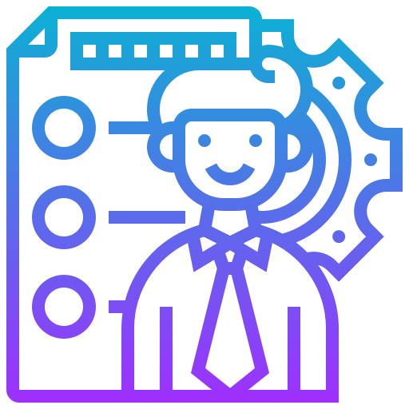

Web Development
Mengembangkan situs web yang responsif dan dinamis, dengan fitur interaktif, database, serta pemrograman sisi server untuk menciptakan pengalaman pengguna yang mulus.

UI/UX Design
Merancang antarmuka pengguna yang menarik secara visual dan mudah digunakan. Berfokus pada kebutuhan pengguna untuk navigasi yang intuitif dan tata letak yang estetis, meningkatkan interaksi pengguna

Project Manajemen
Mengelola proyek dari awal hingga akhir, termasuk perencanaan, koordinasi tim, dan pengawasan kemajuan untuk memastikan semua tahapan proyek selesai tepat waktu dan sesuai anggaran.